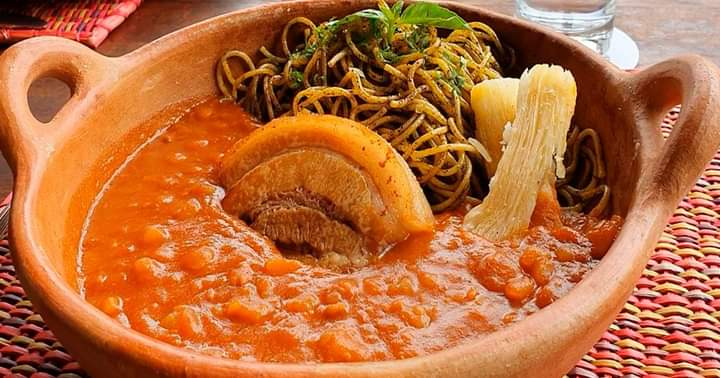

Carapulcra con Sopa Seca y Tamal con Sarza criolla
La carapulcra con sopa seca ofrece una experiencia gastronómica rica y satisfactoria, con la combinación de texturas y sabores de ambos platos, la textura robusta de la carapulcra y la complejidad y el equilibrio de la sopa seca. Esta combinación no solo es un festín para el paladar, sino también un reflejo de la rica herencia cultural y culinaria de la Provincia de Chincha.